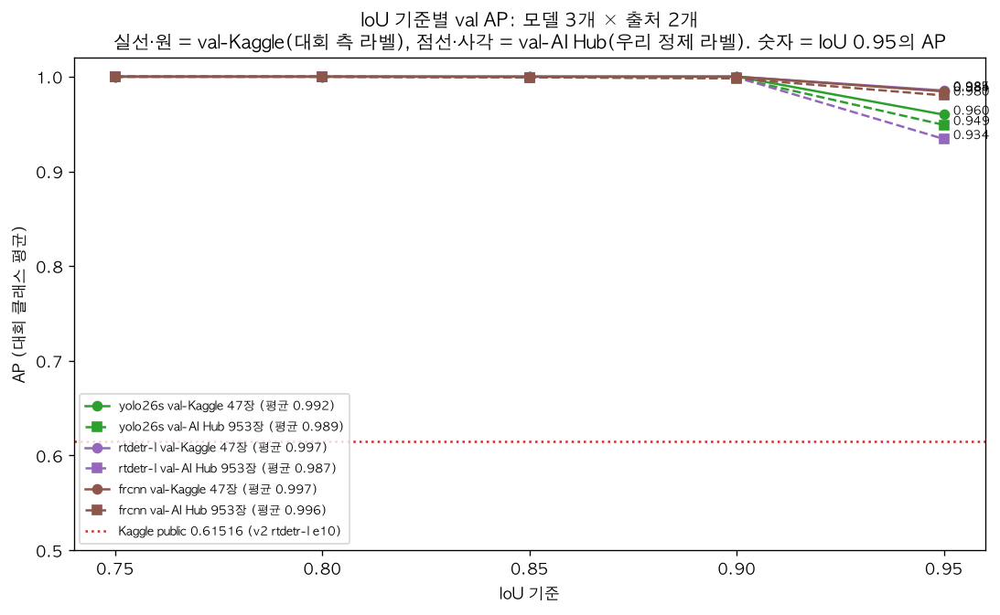

1 / 0
2차 실험
클래스 혼동은 사라지고, 남은 손실은 IoU 0.95의 박스 정밀도입니다.
1차에서 5~19개였던 클래스 틀림이 YOLO·F-RCNN 0, RT-DETR 3으로 줄었습니다.
IoU 0.75~0.90의 AP는 0.99~1.00이고 손실은 0.95에서만 납니다.
| run (val 정답 3,053개) | 맞음 | 클래스 틀림 | 못 찾음 | IoU<0.95 |
|---|---|---|---|---|
| YOLO26s v3 e10 | 3,053 | 0 | 0 | 83 |
| YOLO26s v3 e20 | 3,052 | 0 | 1 | 58 |
| RT-DETR-l v3 e10 | 3,050 | 3 | 0 | 102 |
| Faster R-CNN v3 e10 | 3,053 | 0 | 0 | 37 |
| Faster R-CNN v3 e20 | 3,053 | 0 | 0 | 24 |

← →/Space 이동 · N 노트 · Esc 목차